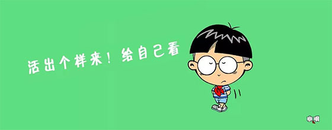

个人信息
姓名：陈思航
学号： U202315549
专业：计算机科学与技术
邮箱：350204704@qq.com
爱好：篮球、吉他、户外（爬山露营等）
人生格言
如果我们能够为我们所承认的伟大目标去奋斗，而不是一个狂热的、自私的肉体在不断地抱怨为什么这个世界不使自己愉快的话，那么这才是一种真正的乐趣。
个人简介
本人性格开朗、稳重、有活力，待人热情、真诚工作认真负责积极主动能吃苦耐劳喜欢思考虚心与人交流以取长补短有较强的组织能力、实际动手能力和团体协作精神能迅速的适应各种环境并融合其中。
社会责任感强踏实肯干主动争取锻炼机会不断地完善自己，提高自身素质在学好专业课与公共课的基础上，还阅读了大量的课外书籍，不断地增加新知识陶)冶情操、开拓视野。
不仅如此，本人还积极参加社会实践活动，和各种文体活动，培养了本人一定的组织与社交能力本人热爱篮球、羽毛球、跑步、下棋、唱歌所谓人无完人，目前本人发现自己有时候地确很难控制自己地情绪很多时候处理事情有点感情用事，不够理性经过仔细分析,本人发现这是由于自制能力不够造成地,本人决定在以后地学习，生活中克服这个毛病做一名优秀地大学生。
